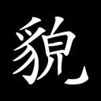
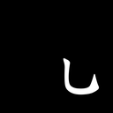

sa89678094d2a
先判断：明显结构异常 / 合法可接受 / 不确定或不可读。
判断后展开原字、完整笔画和 mask
来源字：貌；单笔内部断裂；原笔画序号（从 1 开始）：[14]



{"attempts": 5.0, "break_after_parts_96_t128": 2.0, "break_after_parts_96_t9": 2.0, "break_after_parts_native_t128": 2.0, "break_after_parts_native_t9": 2.0, "break_before_parts_96_t128": 1.0, "break_before_parts_96_t9": 1.0, "break_before_parts_native_t128": 1.0, "break_before_parts_native_t9": 1.0, "break_center_x_96": 58.375, "break_center_y_96": 74.125, "break_part_1_area_96_t128": 74.0, "break_part_1_area_96_t9": 120.0, "break_part_1_area_native_t128": 146.0, "break_part_1_area_native_t9": 165.0, "break_part_1_length_96_t128": 18.0, "break_part_1_length_96_t9": 20.0, "break_part_1_length_native_t128": 28.0, "break_part_1_length_native_t9": 27.0, "break_part_1_support_96_t128": 20.0, "break_part_1_support_96_t9": 20.0, "break_part_1_support_native_t128": 28.0, "break_part_1_support_native_t9": 26.0, "break_part_2_area_96_t128": 148.0, "break_part_2_area_96_t9": 193.0, "break_part_2_area_native_t128": 265.0, "break_part_2_area_native_t9": 304.0, "break_part_2_length_96_t128": 31.0, "break_part_2_length_96_t9": 31.0, "break_part_2_length_native_t128": 37.0, "break_part_2_length_native_t9": 39.0, "break_part_2_support_96_t128": 30.0, "break_part_2_support_96_t9": 29.0, "break_part_2_support_native_t128": 36.0, "break_part_2_support_native_t9": 37.0, "break_visible_gap_96_t128": 8.1968994140625, "break_visible_gap_96_t9": 6.990699768066406, "broken_stroke_count": 1.0, "changed_fraction": 0.04064207650273224, "gap_length": 11.77603418708931, "gap_length_96": 8.832025640316983, "glyph_scale": 96.0, "input_changed_fraction": 0.04145077720207254, "input_changed_pixels": 56.0, "input_edge_changed_pixels": 33.0, "input_foreground_changed_pixels": 53.0, "local_stroke_width": 7.19379997253418, "local_stroke_width_96": 5.395349979400635}下载操作前后笔画层（NPZ）


{kind=link}